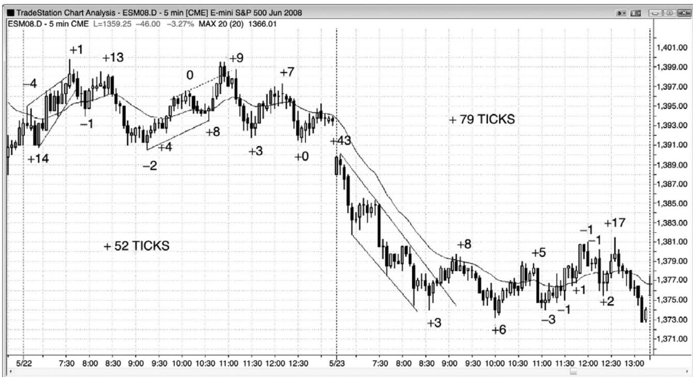
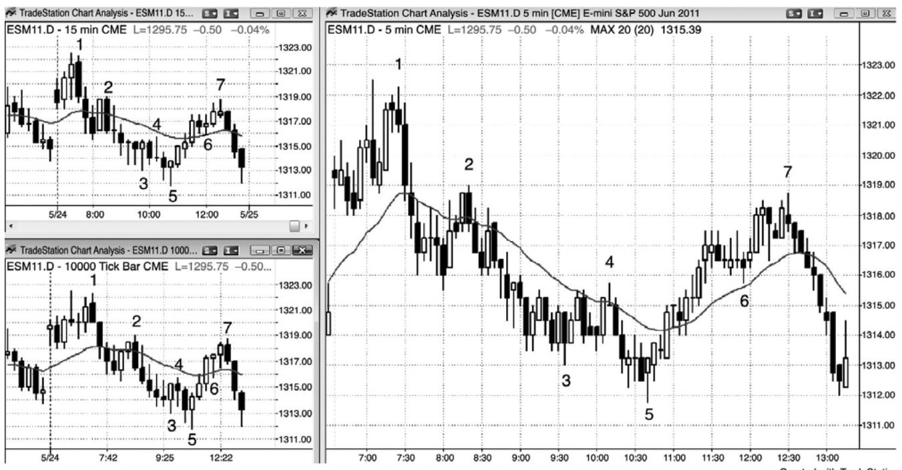
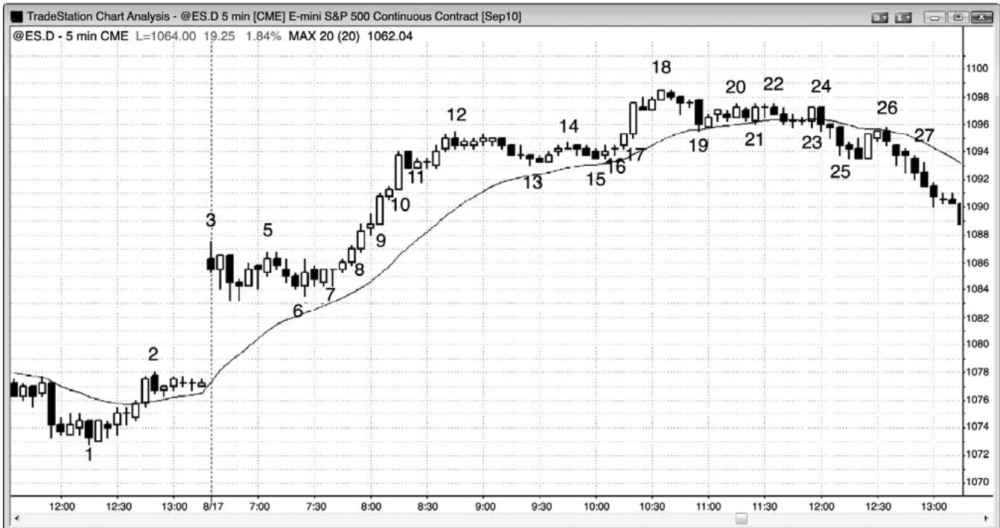
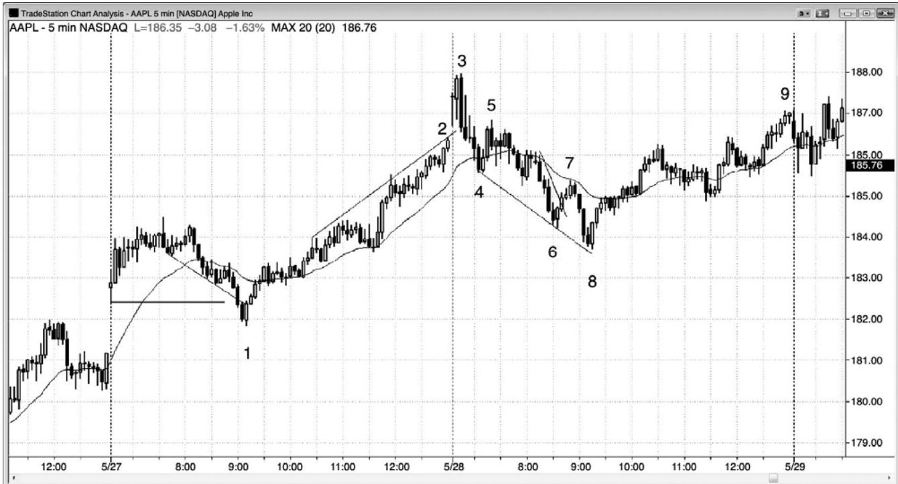
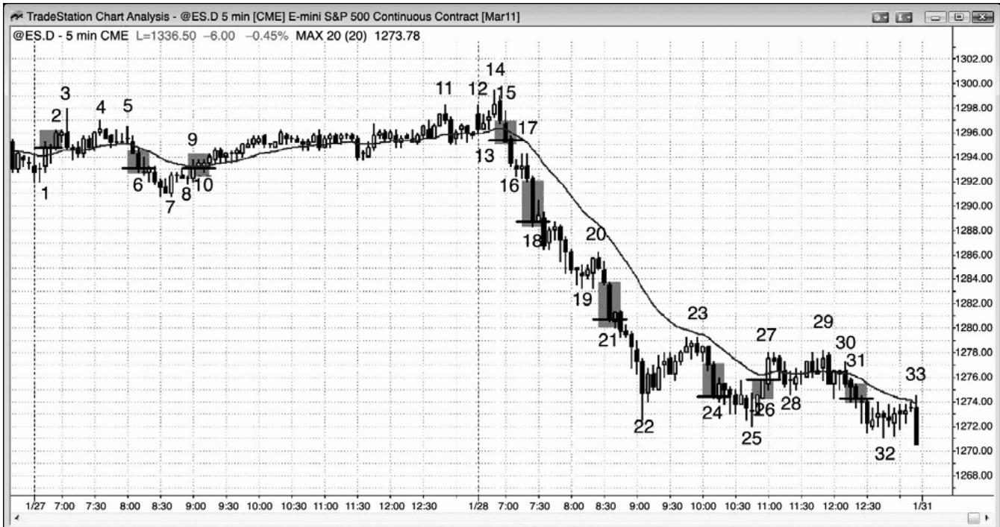
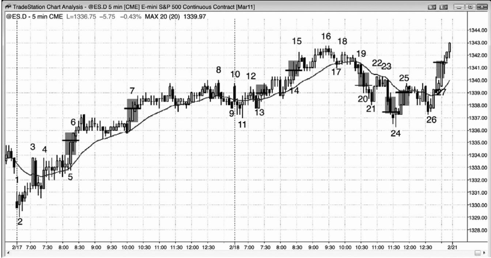

第15章 总在场内¶
第 15 章 总在场内
这可能是交易中最重要的一个概念。交易者们应该不断研判市场是否正在做趋势运动，“总在场内”方法能够帮助交易者做出那个重要的决定。如果你不得不一直在场内，要么做多，要么做空，那么总在场内头寸就是你的当前头寸。这种方法的一些变种为许多交易者所使用，包括机构。举例说明，大部分共同基金通常是总在场内多头，大部分套利基金保持接近满仓操作，但是常常在某些市场中持有总在场内多头，而同时在另外一些市场中持有总在场内空头。如果私人交易者经常错过太多大幅运动，那么他们应该考虑使用总在场内方法。
通过问趋势是上涨还是下跌来决定总在场内方向是困难的，因为大部分趋势交易者在市场方法不清晰时并未持有头寸。市场要么是总在场内多头，要么是总在场内空头，一直如此，而且对于趋势的方向，通常存在大致的共识。一天做 20 笔或更多笔交易的交易者，看到总在场内方向在一天中反复翻转，但是很少有交易者能够日复一日地这样频繁地翻转。不过，对于一天只寻找最好的 3 到 10个波段的交易者，他们愿意在允许多次回撤的情况下不改变对当前波段方向的看法，他们有一种总在场内心态。一旦某个波段开始变弱，他们要么在每个新的信号反转交易，要么获利了结，然后寻找新的交易。实际上，很少有交易者会整天待在场内，在每个反向信号将头寸反转。在一天当中，大部分交易者都需要休息，而且在设定反转交易时会经历一段困难的时间。虽然他们会选择很多总在场内反转架构，但是他们通常把每个架构都当作波段交易，在寻找反向交易前离场。他们集中精力于赚取至少与风险一样大的利润，而不是在下个反转信号将头寸方向反转，并且使用总在场内信号作为他们的入场架构。一般而言，如果一个信号明显是总在场内反转，那么交易者应该假定至少有 60%的可能性会到达至少与风险一样大的利润目标。尽管总在场内信号的最低标准是市场更有可能向新的方向而不是原来方向运动，也就是说只需 51%的确定性，但是大部分此类信号有 60%或更高的确定性。举例说明，在电子迷你中，如果交易者们需要使用两点的止损来做一笔交易，那么他们使用的利润目标至少应该距离他们的入场点两点，如果他们正确的判读了价格行为，那么他们很可能至少有 60%的成功率。
如果交易者们此时观察图表，被迫马上新建一个头寸，要么做空，要么做多，而且他们至少可以决定向哪个方向运动的几率略高，那么他们就看到一个总在场内头寸。这至少是短期趋势的方向。如果他们不能形成自己的看法，那么他们应该观察均线和当前不确定状态之前的运动（记住，不确定性意味着市场处于交易区间内）。如果近期棒线的大部分收盘价都在均线下方，那么总在场内头寸可能是空头。如果近期棒线的大部分收盘价都在均线上方，那么总在场内头寸可能是多头。如果交易区间之前的运动是上涨，那么总在场内头寸可能是多头。如果交易区间之前的运动是下跌，那么总在场内头寸可能是空头。如果你正希望在回撤买进，那么总在场内头寸可能是多头。如果你正希望在反弹做空，那么总在场内头寸可能是空头。如果你就是不能确定，那么市场是处于交易区间内，你就要准备低买高卖。你的目标是与市场的运动同步。那就像小时候跳大绳一样，你的两个朋友正在摇着一根跳绳，你就要跑进去跳绳。你需要细心观察，把握节奏。一旦你对自己有了信心，你就开始跳入。对于交易，一旦你对市场正要向哪里运动有了合理的自信，那就是跳入的时刻。
有些交易者利用更高时间框架图表来确定总在场内方向。举例说明，如果他们使用 5 分钟图交易，60分钟图处于一轮多头趋势中，并且位于均线上方，那么他们只会寻找5分钟图上的买进架构。有些交易者使用较高时间框架图表上的指标来确定总在场内方向。举例说明，如果60分钟随机指标正在上升，那么他们只打算在5分钟图上的回撤买进。有些交易者对于在 5 分钟图上每天评估 10 到 20 个反转感到不适，他们喜欢使用较高时间框架图表，每天可能只需做 3 到 5 次决定。这是一种有效的方法，但是，由于棒线较长，所以止损也不得不加大，那就意味着头寸规模应该减小。
甚至在市场开盘前，交易者们就有一种偏见，即昨天最后一个总在场内头寸可能仍然控制市场。不过，一旦连续出现两条强度合理的同方向趋势棒，他们就可能形成新的总在场内方向。在出现突破和坚持到底之前，那是不确定的，但那是一个起点。如果背景正确，那么它可能引起一笔交易，比如在第一个回撤入场。通过大量实践，从理论上讲交易者会全天一直在场内，在每个合理的信号反转头寸。
P167
市场总是在尝试反转，而且经常是非常接近反转，但是，就差最后一点坚持到底，交易者们需要看到那一点坚持到底才能自信地认为反转成功。对于顺势交易者们来说，这些近似的反转是很棒的机会。举例说明，如果有一轮多头趋势，形成一条强空头突破棒，那么很多多头会在那一棒的收盘买进，预期不会出现坚持到底的卖出。他们正确地认为大部分反转尝试失败，那将是一个在很棒的价位买进的短暂机会。其他多头则会等等看下一棒收盘是什么样子。如果它不是空头收盘，那么他们会在收盘买进，另有多头会在它的高点上方，在那条强空头棒的高点上方买进，那里可能有空头的保护性止损。当空头没有立即得到他们所需的坚持到底时，他们会买回自己的空头头寸。当多头和空头都在买进时，市场至少会上涨若干棒。在另一个合理的架构产生之前，空头不愿做空，而那种架构常常产生在新的趋势高点之后。当初学者们看到那个强空头尖峰时，他们变得害怕极了。他们认为市场正在突破，他们需要马上做空。他们只看到那条很强的空头棒，突然忽略了之前的强多头趋势。结果，他们在距失败的突破尝试低点一两个跳动之内做空，当市场向上回转时被止损踢出。反弹通常看起来很弱，所以他们不会买进。他们一直准备在低点 1 或低点 2 做空架构卖出，预期那个强空头尖峰之后出现坚持到底，但是低点 1 失败，他们的止损被击中。然后，低点 2 失败，他们第三次连续亏损。这是因为他们不明白当市场处于总在场内多头状态时意味着什么。那意味着多头趋势仍然在起作用，尽管它总是向总在场内空头翻转，但是它没有。在总在场内方向翻转前，交易的唯一方向是做多。一直打赌反转将会成功是一种代价不菲的错误，因为 80%的反转都不会成功。
总在场内是一种波段交易方法。为了让这种方法有效，交易者应该只寻找一天中最重要的 3 到 10 个波段，而不是在每个微型信号处反转头寸（很多交易日会出现 20 个或更多反转，但是大部分都太小，无法获利）。另外，对于大部分交易者来说，一旦交易已经向他们的方向运动了一段约等于初始风险两三倍的距离，他们就会部分或全部退出，他们并不希望时时刻刻都在场内。当机构开始获利了结时，市场会回撤至一个让这些机构在趋势方向上重新入场的价位，结果使得趋势恢复。当一轮强趋势演变为交易区间时，总在场内头寸常常保持不变。如果交易者正打算在交易区间内交易，那么他们应该大部分或全部做刮头皮。然而，如果总在场内头寸不变，那么他们应该考虑只在趋势方向上刮头皮。举例说明，如果有一轮强空头趋势正向上调整，但是没有强多头尖峰，而且市场一直位于均线下方，那么总在场内头寸仍然是看空。尽管市场处于交易区间内，但是交易者们应该只在趋势方向上寻找刮头皮机会，也就是说他们应该寻找做空架构。如果出现一个很强的买进架构，那么它或许会将总在场内头寸翻转为多头，至少有足够的棒线允许做一笔多头刮头皮交易。但是，任何没有强到令总在场内方向向上翻转的架构，一般都不值得交易。
这是一种波段方法，因此，当市场处于紧凑交易区间内时，交易者们不应使用。实际上，大部分交易者那时都不应交易，而是应该等待突破或失败的突破。突破或失败的突破都可能引出一笔总在场内波段交易。如果经验丰富、稳定获利的交易者希望在紧凑的交易区间内交易，那么他们应该选择紧凑交易区间形成之前出现的总在场内交易，并且为了博取一笔波段利润而持有，或者完全使用限价入场单做刮头皮交易，在区间极点和向上或向上突破前一棒时反向入场。
在交易区间日，在市场靠近区间另一侧之前，总在场内反转常常是模糊的。举例说明，在出现一个多头尖峰，暴涨至区间顶部之前，常常不是明显的看多，在出现一个强空头尖峰，暴跌至区间底部之前，常常不是明显的看空。然而，在区间顶部买进和在区间底部做空，刚好与交易者们应该做的事情相反。总在场内是一个适用于趋势的概念，在交易区间内是危险的，在交易区间内，最好是刮头皮和低买高卖。举例说明，当市场向区间顶部运动时，将会有突破向上超越区间内的波段高点，那可能令一些交易者认为市场已经翻转为总在场内多头，但是，波段高点的重要性通常不足，突破和坚持到底没有强到说服每一个人市场已经翻转。如果你正在观察那一波上涨运动，并且猜测它是否真的已经翻转为总在场内多头，那么你就是不确定的。由于不确定是交易区间的标志，所以你就知道市场是处于交易区间内。趋势会制造一种持续的紧迫感。你确信市场还要大幅运动，你迫切希望出现回撤让在更低的价位买进。交易者们认识到，如果上涨运动是一轮新的多头趋势，不只是交易区间内一个短暂的上涨尖峰，那么那一波运动将会形成一系列强多头棒，并且在在向上超越每个波段高点之后不会暂停。仅当市场向上强势突破整个区间，且出现坚持到底时，共识才会达成，如果只是区间内的一波向顶部或底部的快速运动，不会达成共识。新手们担心市场可能不会再有多大幅度的运动，但是老手们知道，对交易区间的成功强势突破通常最低会到达某一个测量运动目标，提供充足的获利空间。
在交易区间日，常常在当天的低点附近形成最强的空头尖峰，原因是真空效应。强势多头预期市场会测试交易区间低点，因此，当市场靠近低点时，他们会停止买进。这就产生一种失衡，市场在空头尖峰中迅速下跌。同时，动能程序侦测到那种加速，它们也会快速做空，直到动能放缓或反向。如果交易者们只观察当前的下跌腿，那么他们会看到一个很强的空头尖峰，并且认为总在场内交易刚刚已经变为强势多头。然而，如果他们退后一点，观察一下整张图表，那么他们可能会猜测那是由真空效应造成的。他们非但不会寻找做空架构，而是准备在失败的突破尝试买进。
P168
那么，交易者需要看到什么才能选择总在场内方向呢？几乎所有的总在场内交易都需要一个尖峰，然后交易者们才会信心倍增。交易者们希望看到足够强的突破，然后预期出现坚持到底。突破强弱的征兆在第二本书中讨论过。在大部分交易者相信总在场内方向是多头之前，通常至少必须有两条连续的强多头趋势棒，在他们认为总在场内方向是空头之前，通常至少必须有两条连续的强空头趋势棒。在第一个小时期间，在明确的趋势确立之前，两条连续的多头趋势棒将会使交易者们去寻找买进刮头皮机会，两条连续的空头趋势棒将会使他们寻找卖出刮头皮机会。这一内容在关于开盘交易的第 19 章讨论过。
如果背景正确，甚至一条中午幅度的趋势棒也足以令交易者们认为总在场内头寸已经向反方向翻转。不过，在足够多的交易者认为总在场内方向已经翻转，即将出现明显的坚持到底之前，至少需要两条或多条连续的趋势棒。就像逆势交易者可能愿意持有头寸经历一次回撤而不是两次回撤一样（举例说明，当在底部买进时，如果低点 2 触发，那么多头将会退出，而且有时会反转做空），总在场内交易者们一般喜欢看到第二条强趋势棒，然后他们才感觉总在场内头寸已经翻转。
由于交易者们通常需要第二条趋势棒才会相信总在场内头寸已经翻转，所以那条趋势棒的收盘价非常重要。举例说明，如果出现一条空头突破棒，那么交易者们会密切关注下一棒的收盘。空头希望形成空头收盘，多头希望形成多头收盘。市场具有惯性，所以大部分改变当前走势的尝试都会失败。也就是说，很多交易者将会在空头突破棒的收盘买进，预期坚持到底棒将形成一个多头收盘，空头将会放弃。如果突破不是太强，而且有充分的理由相信突破应该失败（比如多头旗形底部的突破尝试），那么这可能是一笔不错的交易；但是，由于很难决定，所以只有经验丰富的交易者才应考虑。多头希望在回撤买进，所以他们寻找空头尖峰逆势入场。多头把空头尖峰看作是处于错误一方的空头制造的，因此，空头们不得不认赔买回他们的空头头寸。另外，那些空头至少在一两棒内不准备再次卖空，所以有较少的空头进入市场。这便增加了在空头尖峰买进的多头们的获利几率。类似地，当市场为总在场内空头时，空头们把小型腿顶部的多头尖峰看作很棒的卖空机会。他们认为多头将会被套，当被套多头不久认赔离场时，他们就会变成卖家。
如果坚持到底棒很强，那么交易者们可能会在那一棒收盘或小型回撤入场。举例说明，如果有一个很强的多头突破，下一棒是一条强多头走势棒，那么很多交易者会在那条坚持到底棒的收盘或者在一两个跳动的回撤买进。如果坚持到底棒很弱，比如是一个十字星，那么通常更好的做法是在回撤买进，而不是在那一棒的收盘买进。如果坚持到底棒只超越了突破棒几个跳动，那么几率偏向于突破失败。如果它超越了很多个跳动，那么几率偏向于那一棒一旦收盘便成为一条强趋势棒。大部分交易者会认为市场具有明确的总在场内方向。有时，市场只超越突破棒几棒，然后便平静地在一条与突破方向相反的通道内反转，从未清楚地确认突破已经失败，总在场内方向已经翻转。在这种情况下，对于大部分交易者来说，总在场内方向可能没有改变，但是，如果回撤幅度太大，那么他们将会被保护性止损踢出场外。市场很可能正在进入交易区间，因此，他们会切换到交易区间交易模式，即刮头皮交易，并且不允许赢利的交易转变为亏损交易。举例说明，如果有一个多头突破，随后是包含几条疲弱棒线的坚持到底，然后市场在没有出现空头尖峰的情况下开始形成一条疲弱的空头通道，那么市场可能仍然保持总在场内多头。然而，多头应该设好保护性止损，以防空头通道在没有出现明确空头反转的情况下下跌较长时间。如果多头及早买进，已经产生大笔开盘利润，他们他们可能会把止损设在盈亏平衡点。如果他们的买进较迟，那么他们或放应该在信号棒下方离场。总之，如果坚持到底较弱，那么交易者们不应在高点附近买进，而是应该等待回撤。
如果他们的确在顶部附近买进，那么应该仅在感觉到紧迫感时那样做。如果没有马上出现坚持到底证明紧迫感的存在，那么他们应该离场并准备在回撤买进。
作为一条一般性规则，总在场内翻转为空头的最低要求通常是坚持到底棒没有一个多头收盘。如果它是一条小型空头棒或一条十字星棒，那么对于大部分交易者来说，这就确认了空头在控制市场，但是它表明新的空头趋势并不强劲。最好准备在反弹和低点 1、低点 2 架构卖空，而不是在棒线的收盘卖空。如果坚持到底棒有一个强多头实体，或者是一条多头反转棒，那么这可能是一个失败突破买进信号。如果它拥有一个较小的多头实体，那么大部分交易者会在做空前等待更多证据，但是认为新趋势形成的几率大大降低。当市场突破进入可能的总在场内多头时，上述过程刚好相反。坚持到底棒的最低要求通常是它不是空头收盘。如果坚持到底棒并不突出，那么准备在回撤买进，而不是在棒线的收盘买进。如果坚持到底棒拥有一个空头收盘，那么突破可能是一个做多陷阱，它常常是更多的证据。
一旦交易者们自信地认为突破拥有坚持到底，他们接下来就会寻找测量运动。举例说明，如果有一个强多头尖峰持续了 3 棒，向上突破一段交易区间，那么很多交易者会认为可能形成一波向上的测量运动，测量基准是尖峰或交易区间的高度，而且很多人会立即以市价最低买进一个小型头寸。由于他们非常自信，所以他们对于等距运动的方向概率（在第二本书中讨论）至少有 60%的确定性，每当那种情况出现时，数学几率偏向于做一笔交易。随着尖峰继续，风险保持不变，等距运动的方向概率将保持在 60%或更高，但是回报变高，这使得交易从数学上来看更好了。如果他们在高盛（GS）中的一个强三棒尖峰的顶部买进，那个尖峰的高度为$1.00，那么至少有 60%的可能性市场会在下跌$1.00 到达尖峰底部之前形成一波向上的、高度为$1.00 的测量运动。如果那个尖峰在接下来的一两棒增长为$1.50，那么他们所冒的风险仍然是到尖峰底部（此时他们可能已经调紧止损），现在的测量运动目标高出当前棒线$1.50，高出入场$2.00。现在，他们至少有 60%的可能在亏损不超过$1.00 之前先赚到$2.00，也就是说他们的交易者方程非常强。如果尖峰继续增长，那么胜率将保持在较高水平，而且回报会继续增长。当交易者们调紧他们的止损时，风险降低，从数学上看交易甚至变得更好。总之，每当市场表现出明确的总在场内方向，交易者们正在使用交易者方程评估一笔交易时，他们应该假定胜率最低为60%。
在第一个小时的某一点，市场通常会进入总在场内模式，很多交易者喜欢在那一点做总在场内交易。一旦市场向他们的方向运动的幅度达到风险的两倍或三倍，有些交易者便获利了结。举例说明，如果他们在苹果（AAPL）的一个总在场内入场买进，他们的初始止损是低于入场价位 1 美元，那么在获得 1 美元或两美元的利润后，他们会尝试部分或全部离场。另有一些交易者喜欢持有头寸直到出现明确的反转，市场的总在场内方向已经向反方向翻转。然后他们会反转头寸，真正地保持总在场内。由于大部分交易者不具备在每个微型反转将头寸反转的能力，所以他们只寻找一天中最强的 2 到 5 个反转。有时，回撤幅度会不断增长，但是没有明确地产生总在场内反转。举例说明，如果市场形成一个强多头尖峰，明显是总在场内多头，但是接下来出现一波低动能回撤，持续了几个小时，那么交易者们需要重新评估他们之前的预期。他们应该在市场中设好一个最坏情况下的保护性止损，以防回撤继续增长，跌破他们的入场价位。有时，市场会在没有明显的空头尖峰和总在场内卖出信号的情况下跌破他们的入场点。如果他们的账面利润达到了 7 个电子迷你点，那么他们可能不希望市场回到他们的入场价位，他们可能选择使用盈亏平衡止损。如果他们被止损踢出，那么他们会等待并寻找任一方向的总在场内交易。如果市场在他们入场后几分钟之内便回撤，那时他们尚未获得多少有意义的利润，那么他们的保护性止损应该位于多头尖峰下方，尽管那可能非常远。如果止损距离非常远，那么他们的头寸规模就必须足够小，以便使他们的风险保持在正常范围之内。
一旦你认为市场已经有了总在场内方向，那么通常最好在市价或微小回撤入场一个小型头寸。当总在场内方向非常明确时，尤其应该如此。当动能较低，而且不存在那种紧迫感时，有些交易者喜欢在较大幅度的回撤入场。不过，他们有可能错过一波运动，因为许多很棒的总在场内交易是从低动能开始的，但是直到运动了很多棒和很多点之后，才会出现回撤。总之，每当市场处于总在场内多头时，交易者们会把每一次空头将市场向下反转的尝试看作买进机会，因为他们知道，大部分令趋势反转的尝试会失败。他们会在任意空头趋势棒的收盘价及其附近、前一棒低点或之前任一波段低点及其下方、所有支撑位（比如多头趋势线）下方买进。当市场为总在场内空头时，交易者们会把多头每一次令市场向上反转的尝试看作卖出机会，因为他们正确地认为大部分那样的尝试会失败。他们会在任意多头趋势棒的高点、前一棒高点、先前任一波段高点、以及任意阻力位（比如空头趋势线）附近做空。
由于总在场内交易期间你正在做波段交易，所以你必须允许出现回撤，回撤是难免的。大部分回撤不是反转入场，所以你不能让自己为每一波反向运动担心。一般来说，如果出现一波回撤击中盈亏平衡点，然后市场在你的方向恢复运动若干棒之后，它不应再回到你的入场价位。因此，大部分情况下，接下来你可以把止损移至盈亏平衡点。如果它被第二波回撤击中，而且你对市场的方向不确定，那么就保持持平，直到你对另一个总在场内架构感觉舒适。记住，不确定性是交易区间的标志，总在场内是一种趋势交易方法。
如果你认为形成一个总在场内方向，那么你就不应做逆势交易。这是因为，几乎所有逆势交易都是刮头皮，也就意味着风险可能约为回报的两倍，而且成功率必须达到不现实的70%或更高。如果你认为即将出现一波回撤，那么与打赌回撤幅度和胜率足以让你做一笔可获利的逆势刮头皮交易相比，等待在回撤终了时顺势入场，从数学上来看要好得多。
我有一位朋友，他每天都在开盘后的一两个小时里耐心等待总在场内架构，当发现一个时，他预期趋势至少持续一两个小时，并且运动幅度至少达到平均日区间的三分之一。一旦看到自己中意的总在场内架构，他就入场，然后设定一张包围单，止损超出信号棒，利润目标限价单位于某个测量运动目标或支撑或阻力区，而且至少是所承担风险的两倍。由于他选择的是总在场内入场，所以等距运动的胜率最低是 60%或更高。如果在电子迷你中他所承担的风险是两点，那么在他的保护性止损被击中之前，他至少有 60%的可能性赚到两点。不过，当他承担两点的风险时，他的利润目标总是 4 点或更高，由于是总在场内入场，所以他的成功率很可能最低 50%。虽然永远不会确切地知道胜率是多大，但是他的很多入场的胜率很可能都超过 60%。不过，像很多交易者一样，他不希望在微小反转很常见的日中交易。那么，当他等待自己的交易完成时，他会做什么呢？他起来走走或者出去运动一下。他会在一两个小时后回来，然后，他再寻找当天收盘前的总在场内交易。
P170
什么构成强总在场内市场呢？由于仅当出现趋势或至少是潜在趋势的时候总在场内才会产生，所以要在趋势或反转中寻找强势征兆。在本书（简介）开头列出了一些。那些征兆表现出来的越多，你就越可能获利。明显的征兆是强尖峰，尤其是当尖峰持续了若干棒时。举例说明，如果开盘出现一个很强的向上反转，而且此时的尖峰由三条幅度合理的多头趋势棒构成，那么交易者们会在市价和微小回撤买进。他们不希望等待回撤，因为与出现回撤相比，他们对于市场在接下来几棒的某个点处会涨得更高更加自信。这种紧迫感是完美的总在场内情形，如果你还没有做多，那么就应该考虑在市价或低于那一棒高点几个跳动处使用限价单买进一个小型头寸。你可以看到你的止损将必须设在哪里，那可能是在反转的入场棒低点。如果那意味着你不得不承担 8 点的风险，而通常你承担的风险只有两点，那么就把头寸规模降至正常情况下的四分之一。对你来说，最重要的是必须做多，即便是一个微型头寸，因为你自信地认为市场正在走高。如果你认为当天正在形成一个强多头趋势日，那么就努力持有至少部分头寸直到当天收盘，除非有明确而强劲的空头反转形成。
对于股票，盈亏平衡止损被击中的可能性较低，因此，波段交易的获利性更高。一般来说，当运动幅度达到约 0.5%到 1%，或者达到初始风险的两倍左右时，就要准备以刮头皮退出三分之一到一半的头寸，然后把剩余部分波段化。如果市场看起来正在向对你的交易不利的方向反转，但是仍未反转，比如一个对昨日高点的测试，那么就要再了结四分之一到三分之一，但是，总要试着让至少四分之一的交易自由奔跑到你的盈亏平衡止损被击中，直到出现明确而强势的反向信号，或者直到收盘。趋势延续的时间常常比你所想像的要长得多。
持有头寸经历重复的回撤，直到在你的目标价位离场，除非出现明确的反转架构，或者保护性止损被击中。有时，回撤可能非常迅猛，但是并不足以触发总在场内反转，所以坚持最初的计划，不要因为一条对你不利的大型趋势棒而忐忑不安。如果你的止损被击中，那么就待在场外，直到出现另一个明确和强势的架构，方向是任意的。如果出现一个明确而强势的架构，那么就重复上述过程。如果你的交易规模是两张合约，而且当反转形态触发时已经做多 1 张，那么就卖空 3 张。1 张使你退出剩余的多头头寸，另外两张在新的相反方向开始上述过程。在利润达到风险的一到两倍时，以刮头皮交易了结第一张合约，并把第二张合约波段化。
这种方法的关键在于令当出现明确而强劲的架构时才入场或反转。如果没有那样的架构，那么就要依靠盈亏平衡止损，尽管可能把波段部分所得收益全都还给市场。如果你关注一小篮子股票，那么几乎每天至少有一只股票会形成一个可靠的入场，允许你做一笔波段交易。
在一天中的任意时刻，你可能决定已经形成一轮明确的趋势，或者已经形成明确的反转。对于任意一笔总在场内交易，你需要一个条件，或者两个都需要。一方正在控制波段，向那一方向的运动很可能还要继续。考虑一下保护性止损要设在何处，计算一下在市价入场所需承担的风险。作为一条一般性规则，趋势很可能会继续大约相同的跳动数，成功率很可能大于 50－50，原因是你认为存在一轮趋势。如果你自信地认为市场处于总在场内状态，那么胜率很可能是 60%或更高。在趋势继续之后，通常你能够跟踪调整保护性止损，降低风险。另外，如果自你入场之后，市场已经趋势运动了较长时间，那么你最初的利润目标可能会增加，新的保护性止损位引出一个新的利润目标。结果要在获利潜能大于风险，胜率仍大于50－50的情况下重要评估。对于趋势期间的波段交易，交易者方程会越来越好，这是波段交易的内在特征，因此，它是最好的交易方法之一，尤其是对初学者来说。
老手们可以利用总在场内方法在趋势方向上逐步加仓，但是这需要对趋势强弱的判断保持自信。举例说明，如果交易者们感觉存在一轮强多头趋势，那么他们可能使用限价单对多头头寸逐步加仓，依据是近期的平均日区间。如果他们正交易电子迷你，近期平均日区间约为 12 到 15 点，过去一两个小时内的最大回撤幅度只有两点，那么他们可能在 1 点回撤买进一个小型头寸，并且在又回撤1点和两点（平均日区间的10%到20%）时买进更多，然后可能把整个头寸的止损设在又下降一两点处。如果早先的回撤是 3 点，那么他们可能会设定限价单在下方 3 点处买进，并且在又下跌两点或 3 点处买进更多，对于整个头寸使用两点的保护性止损。如果在某个时间市场翻转为总在场内空头，那么他们会退出头寸并准备做空。逐步加仓在第二本书中讨论过。

在趋势日和交易区间日，总在场内交易是一种可获利的波段交易方法，前提是交易区间日拥有足够大的波段。如图 15.1 所示，第一天是一个交易区间日，总在场内方法净赚 52 个跳动，约合每张合约$600。第二天开始是一轮开盘起空头趋势，然后进入交易区间。总在场内交易者可能会赚到 79 个跳动，约合每张合约$950。做两手的交易者，一手做刮头皮，一手做波段，每天将有 10 笔成功的刮头皮，每天每张合约产生另外的$450。那听起来和看起来都很容易，都实际上很难做到。
图15.2 较高时间框架图表

5分钟图，比如图15.2中的右侧图表，包含81条棒线，大部分交易日都有20多次反转。如果交易者对于做出如此多的总在场内方向决定感觉不适，那么可以通过减少图表上的棒线数量来减少所需的决定次数。三张图上的棒线编号都是相同的。左上图表是 15 分钟图，左下图表是每一棒代表 10,000 个跳动的跳动图。在这两张较高时间框架图表中，反转数量要少得多，不过仍然有几个不错的信号，那足以让交易者以此为生。由于棒线较大，所以止损必须也较大，以便给交易完成的机会。为了使奖金风险与 5 分钟图表上保持相同，头寸规模必须要小一些。
图 15.3 向上跳空，然后回撤

P172
如图 15.3 所示，市场开盘大幅向上跳空，但是接下来形成一条强空头反转棒，所以当天可能成为一个开盘起空头趋势日。这是一个可靠的总在场内做空架构。然而，交易者们知道，每当出现大型上涨缺口时，可能形成大型多头趋势日，而且在多头突破出现之前，市场常常会横盘至下跌运动一个小时。因此，他们虽然做空，但是仍然愿意反转做多。棒 4 是一条空头趋势棒，但是它的尾线很长，而且在接下来的一两棒没有坚持到底。另外，当天第二棒是一条强多头棒，而不是一条强空头棒，交易者们希望看到一张强空头棒作为他们的入场棒。这种市场行为不像是强空头趋势。很多人会在棒 4 后面的内包棒上方离场，然后等待二次信号，但是从技术上来讲市场仍然处于总在场内空头状态，因为还没有出现明确的买进信号。截止棒 5 形成一波小型的两条腿上涨，市场可能正在试图与当天第一棒或第二棒形成一个双重顶。无论你选择哪一棒作为第一个顶都没有关系，因为作用是相同的。有些交易者认为第一个顶是第一棒，有些交易者认为第二棒更有意义。棒 5 后是一条空头内包棒，是一个二次卖出信号，但是在接下来的一两棒，市场再次未能形成一条强空头趋势棒。另外，空头可能会把这看作一个问题。此时，市场已经在一个微型区间内运动了 30 分钟，当那种情况发生时，特别是当出现一个大型的开盘缺口时，市场是处于突破模式。交易者可能在区间的高点上方1 个跳动处用止损单买进，也可能在区间的低点下方 1 个跳动处使用止损单做空。这是一种可靠的突破模式行情。
在棒 5 双重顶和棒 4 与棒 6 构成的双重底之后，棒 7 是一个多头 ii 形态。ii 形态是一种暂停，是一种回撤，所以这是一个更小的突破模式架构，原因是市场正在形成一个双重顶回撤和一个双重底回撤入场。虽然有些交易者会在那个 ii 形态的突破入场，但是大多数人会等待开盘区间的突破。
棒 8 前一棒是一条强多头趋势棒，收盘于棒 5 高点之上，很多交易者在那个波段高点上方做多。棒 8 是一条更大的多头趋势棒，突破了开盘区间。此时，交易者们看到强上涨缺口日突破模式架构的多头突破，相信市场现在处于多头趋势中。虽然他们不知道是否不久会出现回撤，但是他们对于市场不久会走高却充满信心，所以他们在市价买进，那恰好是机构正在做的事情，所以是正确的做法。区间至少等于近期日平均区间的几率很高，区间的加大非常有可能是由更高的价格引起的。初学者们常常被突破的迅速和所需的止损幅度所吓倒，但是他们应该学着以市价至少入场一个小型头寸，并且一直持有到出现强卖出架构，比如棒 18最终旗形反转。如果他们在棒 8 收盘价附近买进，那么他们的理论保护性止损将在棒 7 下方，棒 7 是最近的更高低点。如果这样的止损幅度比他们感觉舒适的止损幅度大 3 倍，那么他们应该只交易三分之一的规模。或者，他们可以只承担低至棒 8 低点的风险，因为强势突破应该马上出现坚持到底。那样可能有较高的几率被止损踢出，但是，如果市场击中他们的止损，然后向上反转，他们可以再次买进，预期形成上涨波段。
棒 9 和棒 10 也是大型多头趋势棒，但它们本身是买进高潮，连续的买进高潮之后不久通常会形成较大的横向至下跌调整。在接下来的两个小时里，棒线变得很小，市场进入一段紧凑的交易区间，但是一直没有现均线回撤。市场试图在棒 13 和棒 15 回撤至均线，但是多头非常积极，以至于他们把买进限价单设在均线上方几个跳动处。他们非常担心市场可能不会触及均线，于是他们把买单设在均线上方。这是多头市场非常强的征兆。然而，每当强多头趋势中出现一波多头横向调整时，它都会突破多头趋势线，可能成为一个最终旗形，比如此处。这使得多头准备快速获利了结。棒 11、13 和 15 是紧凑交易区间内的三次下推，可以看作一个三角形或一个楔形多头旗形。
P173
连续的空头趋势棒向下突破交易区间，未必能说服交易者们总在场内方向已经翻转为空头。向下突破棒 12 之后的紧凑交易区间的两条空头趋势棒较小，而且先前空头没有表现出力量。交易者们不会做空，而是准备在向均线回撤的 20 缺口棒买进。向下突破棒 14 更低高点的三条空头趋势棒没有形成一个引人注目的空头尖峰，多头仍然准备在第一次向均线回撤时买进。此前没有显著的卖压，也没有表现出明显的看空力量。交易者们认为总在场内方向仍然是多头，他们在截止棒 15 的两条腿横向调整买进。
棒17是又一个强多头突破，所以也是一个尖峰和一个高潮，但是，由于它可能是一个最终旗形突破，所以它可能失败，随后趋势反转。在已经行进了 20 棒或更多棒的趋势中，特别是当上涨运动突破一个潜在的最终旗形时，比如这里，交易者们寻找大型多头趋势棒。交易者们把大型趋势棒看作高潮，预期调整可能很快就会开始。因此，交易者们开始卖出。多头抛出自己的多头头寸获利，空头卖空以建立新的空头头寸。他们的在那一棒的收盘、在它的高点上方、在随后任意小型棒（特别是当小型棒拥有空头收盘时）、以及在前一棒的低点下方卖出。多头和空头都预期至少出现两条腿调整，至少持续 10 棒，可能会测试潜在空头旗形的底部棒 15。如果下跌运动非常强劲，那么双方会等待买进。如果它只是一波两条腿调整，而且市场看起来沉稳地反弹，那么双方都会买进。多头会恢复自己的多头头寸，空头则买回他们获利的空头头寸。这里，在从棒 14 开始的一系列空头棒之后，很可能出现更低的价格，因此，收盘前没有明显的买进。
棒 18 是当天第三次上推（棒 3 和棒 12 是头两次上推），可能是一个最终旗形反转，既是从棒11和棒16之间的大型交易区间（一个三角形）开始的反转，也是从棒17买进高潮之后的两条小型棒开始的反转。它也是第三次上推，棒 14 和 17 是头两推。在太平洋标准时间上午 10:30 到 11:00 左右，市场常常回撤，回撤在上午 11:30 结束。另外，市场在一天中还没有触及均线，尽管它在棒 15 接近了均线。下一次回撤很可能幅度更大，因为随后的回撤，特别是在太平洋标准时间上午 11:00 左右之后，常常更深，而且较深的回撤如此靠近均线，几乎肯定会刺穿均线，至少是小幅刺穿。这些因素的组合使得老手们猜测强多头趋势是否正转变为交易区间。回撤还有可能变为一波大型的深幅回撤，甚至是空头趋势，因为截止棒15的三角形突破了棒 6 和棒 12 之间的多头趋势的陡峭趋势线，而且棒 18 可能是一个更高高点趋势反转。很多人在棒 18 高点处的双棒反转下方将剩余头寸获利了结，预期至少出现两条腿、10 棒调整，在考虑于收盘前再次做空之前触及均线。
棒 19 是一个强空头尖峰，它提醒交易者们在回撤之后可能形成一条空头通道。有些交易者会在最终旗形顶部反转做空，但是，由于市场在一天中仍未触及均线，所以均线处还有可能出现 20 缺口棒做多架构。因此，总在场内头寸可能仍然是多头。多头假定下一棒很可能不会是一条空头棒，于是他们在那一棒的收盘价买进。大部分令总在场内头寸翻转的尝试失败，特别是在强趋势中。
棒 23 是一个均线处的双重底做多入场，但是成为一个双棒向下反转的第一棒。对于大部分交易者来说，一旦市场跌破棒24低点，他们便认为总在场内头寸已经翻转为空头。这是一个做多陷阱，一个小型最终旗形顶（从最终旗形的突破可能是一个更低高点）。棒 25 后一棒是一个第一均线缺口棒做多架构，但是趋势现在已经向下。出现一条强多头趋势棒，没有向下突破顶部交易区间，也没有坚持到底，随后在均线处形成一个突破回撤做空入场，要么是在棒 26 向下外包时，要么是在它的低点下方（在均线下方测试均线的空头棒下方做空，是一笔可靠的交易）。
到棒27为止，市场已经变为明确的总在场内空头，交易者们正在市价做空，预期跌势将持续到收盘。风险经理正在来回踱步，告诉他们的交易员必须把多头清仓。交易员们不愿那样做，因为他们坚持认为多头趋势将会恢复，令他们解脱，但是他们的老板不允许他们等。他们和风险经理的薪水都与业绩有关，交易员们可能情绪化地坚持持有自己亏损的多头头寸，但是风险经理的工作是去情绪化，并且在合理的情况下接受亏损。老板总是取胜，结果在收盘前形成一轮空头趋势。空头趋势得到动能卖出程序的加强，因为它们侦测到强趋势，只要下行动能继续，它们就在强趋势中卖出。
在从棒6到棒12的上涨中，最大的回撤只有一两点左右。老手们可能设定限价单在1点或两点回撤逐步加仓，并且在又下跌 1 到 2 点时继续加仓，所冒风险可能是在最后入场的下方 2 到 3 点处。如果市场翻转为总在场内空头，那么他们会退出自己的多头，准备做空。如果他们在 1 点回撤买进一张合约，在又下跌 1 点时增加 1 张合约，那么他们在棒 13 就已做多两张合约。他们可能把保护性止损设在下方两到 3 点处，可能是在均线下方一两点。由于这是一轮多头趋势，所以他们预期市场最低会测试高点，当市场到达一个新的高点时，他们会把第一张合约了结，获利 1 点的利润，然后要么设定限价单在大约 4 点利润时退出另一张合约（大约为那个入场的初始风险的两倍），要么会在市场在棒 18 附近停顿时离场。在棒 18 处，市场可能已经形成一个最终旗形反转，棒 12 到棒 16 是潜在的最终旗形。
P174
图15.4 寻找早期的波段架构

交易者们应该在当天早些时候寻找总在场内交易，因为它们常常产生可获利的波段交易。另外，有时只需一条强趋势棒便可令大部分交易者相信市场已经确立总在场内方向。图15.4中，向上突破多头通道后的强空头外包下跌棒棒 3，可能会令大部分交易者认为即将出现坚持到底，而且总在场内头寸现在是空头。这条大型空头棒跟在强多头趋势棒之后，很可能是当日高点，可能形成一轮开盘起空头趋势。
AAPL 在棒 1 形成一个缺口测试，它是一条强反转棒，在击中一个当日新低，并且向下突破一条空头趋势通道线后向上反转。这是一个很棒的多头波段交易入场，截止收盘，净利润接近$4.00。上涨缺口是尖峰，棒 1 是回撤，引出一条上升通道，在棒 3 见顶。有些交易者认为，在棒 1 上方总在场内头寸已经翻转为多头，而有些交易者则是在随后的两条多头趋势棒中的某一条得出那一结论的。五棒多头尖峰消除了引出棒 1 低点的五棒空头尖峰的影响。这是一个高潮反转，几率偏向于至少形成第二条上涨腿。
截止棒 7 的四棒多头尖峰很长，但是截止棒 6 的四棒空头尖峰更长。大部分交易者仍然认为总在场内头寸是空头，在寻找做多机会之前，他们希望看到一个更高低点或更低低点回撤。
棒8是楔形多头旗形中的向上反转，是棒1上方的一个更高高点（译注：疑为更高低点）。如果你不是反转做多，只是退出自己的空头头寸，那么将净赚约$2.40。很多交易者认为总在场内头寸在市场向上超越棒 8 时便反转为多头，而在随后的多头趋势棒内，有更多交易者得出那一结论。先前在截止棒 7 的上涨运动中表现出的看涨力量，是一种买压的征兆，它令多头自信地认为，在这第二次尝试令市场向上反转时，买压甚至会更强。
当市场还需一棒才能翻转总在场内方向时，交易者们常常会反向操作，预期那一棒不会实现。举例说明，如果棒 5 是一条强多头趋势棒，那么很多交易者可能会改变他们的总在场内空头头寸为多头（在从棒 3 开始的 5 棒下跌之后，大部分人认为市场是总在场内空头）。因为他们知道大部分翻转方向的尝试失败，所以他们会在棒 5 前面的多头趋势棒收盘做空，预期棒 5 不会成为一条强多头棒，预期空头波段恢复。

P175
每当交易者们对接下来若干棒的方向充满信心时，便出现一个交易机会。图 15.5 中的每个灰色矩形，都是交易者们认为可能出现坚持到底的区域。每个矩形中的水平短线，是大部分交易者分享那一信念的价位，尽管很多交易者早就充满信心。当趋势强劲时，比如从棒 14开始的抛盘，通常会出现多次连续突破，在那些突破处，交易者们的自信再次恢复。
虽然有些交易者是严格的总在场内交易者，会在一整天之内一直待在场内，要么做多，要么做空，但是，每当他们认为市场已经失去方向时，大部分人会在交易过程中获利了结并离场。交易者们通常会在反向信号形成时离场，尽管那个信号没有强到令他们反转方向。记住，对于交易者们来说，退出多头交易比做空所需的条件要少。在棒 1 收盘价或它的高点上方 1 个跳动买进的多头，在大型空头反转棒棒 3 变得担心，特别是由于开盘反转可能形成延长的坚持到底。单单棒 3 并不足以让大部分交易者认为市场是总在场内空头，但是很多人会在棒 4 小型楔形空头旗形更低高点退出他们的多头头寸，或者反转做空。另有一些交易者会在那个空头旗形之后的二次入场突破回撤棒 5 退出他们的多头头寸或者反转做空。截止向下突破棒 5 的空头棒收盘、比它的低点低 1 个跳动、或者棒 6 收盘，大部分交易者会认为市场是总在场内空头。
从棒 7 处当日新低的强势向上反转，会令空头担心，因为它是另一个开盘反转，可能是当日低点。从棒 3 开始形成一个双棒尖峰，棒 7 是可能的尖峰和楔形通道内的第三次下推，其中棒 3 后一棒是第一次下推，棒 6 是第二次下推。有些空头会在棒 7 上方离场，大部分空头会在更高低点棒 8 上方离场。棒 7 向上突破了从棒 5 开始的微型通道，棒 8 是突破回撤买进信号。很多交易者认为市场在向上超越棒8时翻转为总在场内多头，而当市场在棒10向上超越多头 ii 形态时，大部分交易者被说服市场是总在场内多头，棒 10 也是一个失败的低点2 做空架构。他们认为那个空头旗形失败，市场至少会形成一波向上的测量运动，测量基准是棒7到棒9空头旗形的高度。
在从棒 14 开始的自由下落中，还有几个区域内交易者会恢复市场在接下来即将继续下跌的自信，比如在棒18收盘，棒18后面的内包棒下方1个跳动处，以及棒18低点下方1个跳动处。尽管棒 18 后面的内包棒拥有多头实体，但是交易者们仍然感觉趋势是向下的，那一棒很可能是一个低点 1 做空架构。棒 21 和 24 处也是这种情况。对于做空来说，交易者方程是极好的，尽管感觉胜率好像只有 50%。实际上，胜率最低 60%，但是交易者们常常因被吓倒而拒绝交易，认为等距运动的胜率只有 50%。这给了他们一个似乎有理却不正确的不交易的理由。他们应该在市价做空一个“我不在乎”规模的头寸，无论什么规模的保护性止损都是合适的，比如设在最近的大型空头趋势棒的高点上方，然后持有头寸经历回撤，直到出现明确的买进架构，比如棒 25 更低低点重要趋势反转。如果风险比正常值大 4 倍，那么交易规模应不超过正常情况下的四分之一。如果他们仍然担心，那么就只交易正常规模的 10%。重要的是在机构积极做空的时候做空，因为逃逸型趋势拥有最强的交易者方程。
图15.6 总在场内架构

P176
如图15.6所示，有几个反转区交易者至少对接下来几棒的方向非常自信，每一个都是总在场内交易的合理入场。激进型交易者会较早入场，并且选择更多反转交易，不过灰色区域是绝大多数交易者都对总在场内方向自信的区域。
在棒 14 收盘或随后的十字星高点 1 上方买进的交易者们，会对棒 16 更高高点处的二次入场做空架构表示担忧。这也可能是棒 14 尖峰之后的通道的顶部，从棒 11 到棒 16 的整波运动，可能是棒7到棒12潜在最终旗形之后的一个更高高点。大部分多头会在棒16下方离场，激进型交易者会做空，认为这是一个合理的总在场内翻转。较为保守的交易者一天只寻找 3到 5 个反转，他们会等待棒 19 或棒 29 的强空头收盘，然后才认为市场已变为总在场内空头。
当交易者们非常自信时，他们应该假定自己至少有 60%的确定性。如果他们的风险约为两点，那么他们需要一个至少两点的利润目标，才能获得一个令人满意的交易者方程。这就意味着他们可以在这些区域中的每一个附近寻找入场，入场之后，设定包围单出场。他们的止损可能距入场价位两点，他们的获利了结限价单也可能距入场价位两点。如果市场靠近他们的利润目标后反转，比如棒 7 收盘后的反弹，那么他们可以调紧止损。在这种情况下，他们会在双棒反转下方接近盈亏平衡点处离场。有些交易者不会调整他们的止损，会一直持有头寸，直到之前的预期明显不再正确，允许交易过程中出现回撤。还有一些交易者，当认为信号足够强时，他们会试着使用 3 到 4 点的利润目标，比如在棒 5 或棒 6 的收盘买进，在棒13 突破回撤（对棒 9 和棒 11 高点 2 多头旗形的突破回撤）的上方买进，在棒 16 小型楔形顶下方做空，在棒 20 收盘做空，在棒 22 和 23 小型低点 2 突破回撤下方做空，或者在棒 26 突破回撤上方买进。有些交易者会把那些看作最强的架构，因此可能有 70%的概率在击中两点的止损前到达两点的利润目标。然后他们去博取两点的利润，知道交易者方程非常强。
截止棒 6，由于大部分交易者认为市场是总在场内多头，所以他们预期令市场翻转为空头的尝试将会失败。然后，他们准备在强空头趋势棒的收盘买进，比如棒 6 后面第四棒，棒7 前面倒数第二棒，那一棒也是对均线的测试。
P177